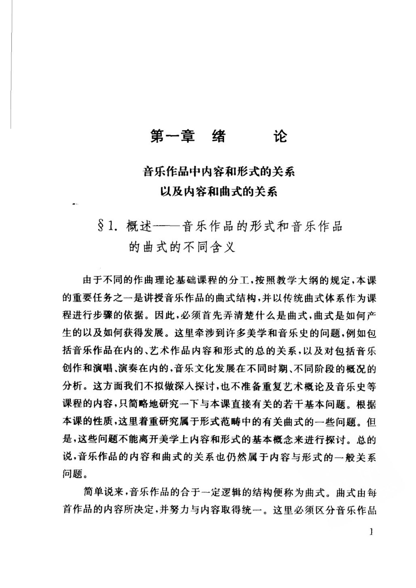
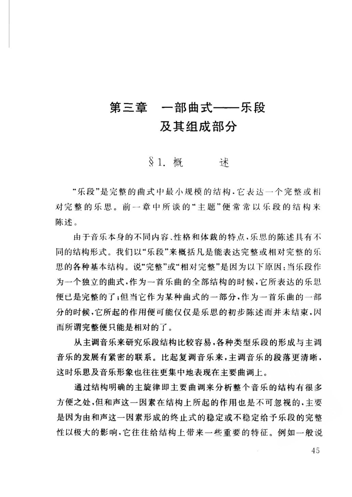
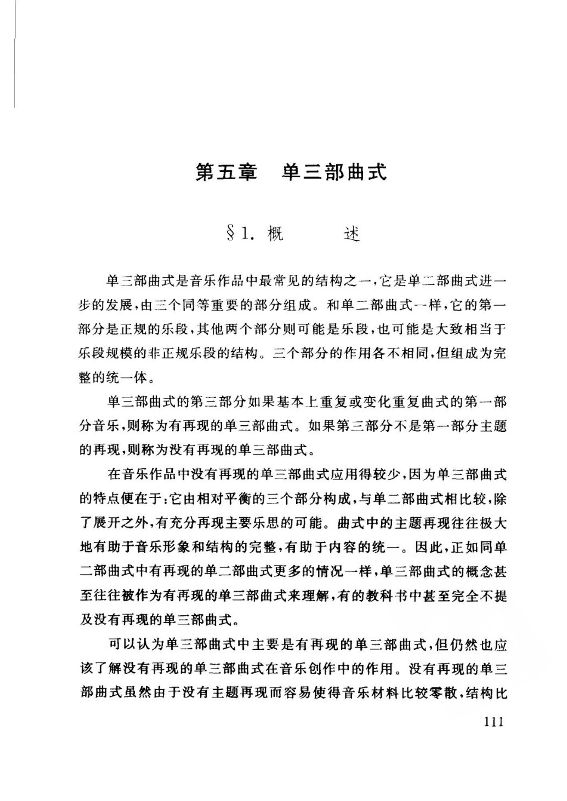
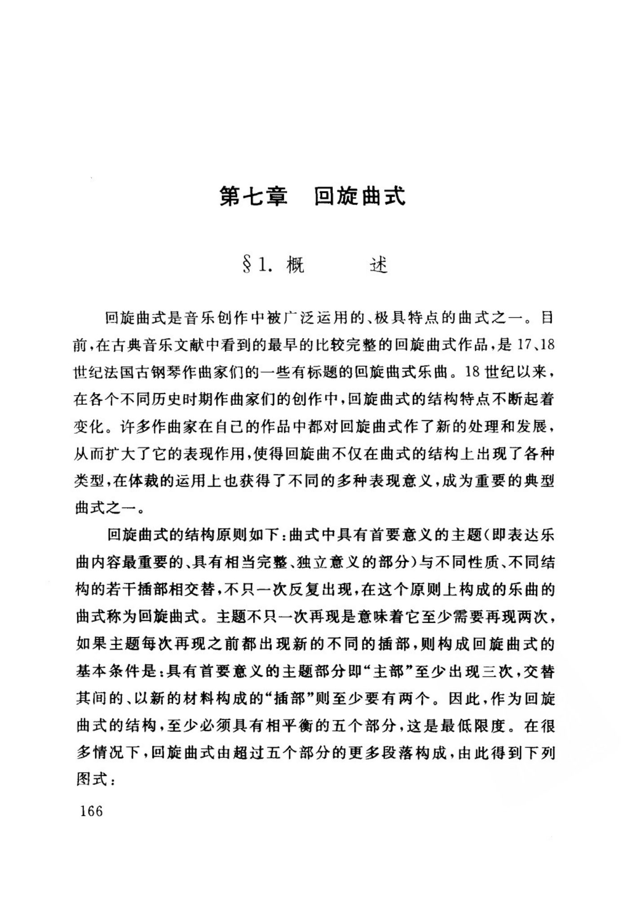
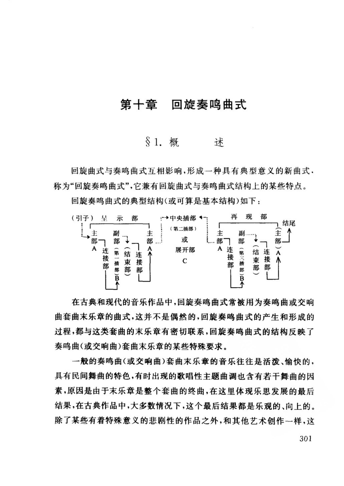
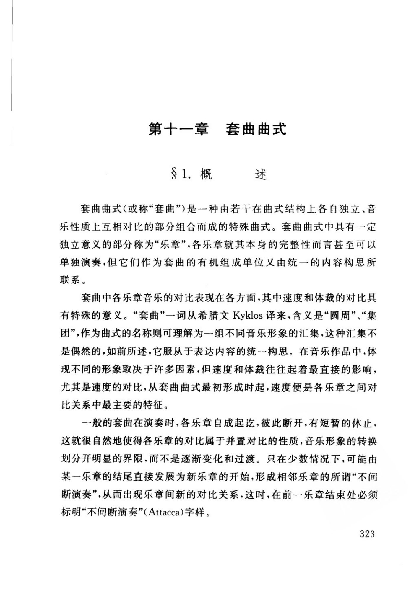
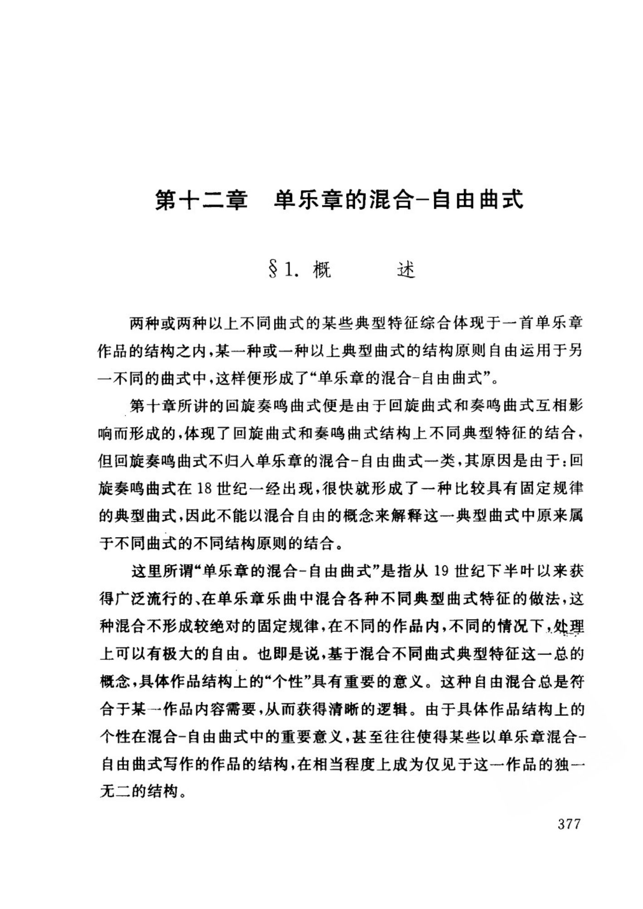

吴祖强《曲式与作品分析（第二版）》
系统讨论音乐表现手段、乐段分类、各单复曲式与套曲；定义与边界条件较完整，适合做术语核对。
页码为 PDF 物理页。以下仅收录理论手册与案例实际引用的页面；页图保留整版，OCR 文本用于检索，不能替代读谱。
PDF p.10
吴祖强
本页在理论手册中的引用
- 论点曲式的定义
OCR 检索文本（仅辅助检索，谱例以影印为准）
第一章绪 论 音乐作品中内容和形式的关系 以及内容和曲式的关系 8 1.概述一一音乐作品的形式和音乐作品 的曲式的不同含义 由于不同的作曲理论基础课程的分工，按照教学大纲的规定，本课 的重要任务之一是讲授音乐作品的曲式结构，并以传统曲式体系作为课 程进行步骤的依据。因此，必须首先弄清楚什么是曲式，曲式是如何产 生的以及如何获得发展。这里牵涉到许多美学和音乐史的问题，例如包 括音乐作品在内的、艺术作品内容和形式的总的关系，以及对包括音乐 创作和演唱、演奏在内的，音乐文化发展在不同时期、不同阶段的概况的 分析。这方面我们不拟做深人探讨，也不准备重复艺术概论及音乐史等 课程的内容，只简略地研究一下与本课直接有关的若干基本问题。根据 本课的性质，这里着重研究属于形式范畴中的有关曲式的一些问题。但 是，这些问题不能离开美学上内容和形式的基本概念来进行探讨。总的 说，音乐作品的内容和曲式的关系也仍然属于内容与形式的一般关系 问题。 简单说来，音乐作品的合于一定逻辑的结构便称为曲式。曲式由每 首作品的内容所决定，并努力与内容取得统一。这里必须区分音乐作品 1
PDF p.54
吴祖强
OCR 检索文本（仅辅助检索，谱例以影印为准）
第三章一部曲式——乐段 及其组成部分 81.概 述 “乐段”是完整的曲式中最小规模的结构·它表达一个完整或相 对完整的乐思。前一章中所谈的“主题”便常常以乐段的结构来 陈述。 由于音乐本身的不同内容、性格和体裁的特点·乐思的陈述具有不 同的结构形式。我们以“乐段”来概括凡是能表达完整或相对完整的乐 思的各种基本结构。说“完整”或“相对完整”是因为以下原因：当乐段作 为一个独立的曲式，作为一首乐曲的全部结构的时候，它所表达的乐思 便已是完整的了；但当它作为某种曲式的一部分，作为一首乐曲的一部 分的时候，它所起的作用便可能仅仅是乐思的初步陈述而并未结束，因 而所谓完整便只能是相对的了。 从主调音乐来研究乐段结构比较容易，各种类型乐段的形成与主调 音乐的发展有紧密的联系。比起复调音乐来，主调音乐的段落更清晰， 这时乐思及音乐形象也往往更集中地表现在主要曲调上。 通过结构明确的主旋律即主要曲调来分析整个音乐的结构有很多 方便之处，但和声这一因素在结构上所起的作用也是不可忽视的，主要 是因为由和声这一因素形成的终止式的稳定或不稳定给予乐段的完整 性以极大的影响，它往往给结构上带来一些重要的特征。例如一般说 45
PDF p.120
吴祖强
OCR 检索文本（仅辅助检索，谱例以影印为准）
第五章单三部曲式 S 1. 概 述 单三部曲式是音乐作品中最常见的结构之一，它是单二部曲式进一 步的发展，由三个同等重要的部分组成。和单二部曲式一样，它的第一 部分是正规的乐段，其他两个部分则可能是乐段，也可能是大致相当于 乐段规模的非正规乐段的结构。三个部分的作用各不相同，但组成为完 整的统一体。 单三部曲式的第三部分如果基本上重复或变化重复曲式的第-部 分音乐，则称为有再现的单三部曲式。如果第三部分不是第一部分主题 的再现，则称为没有再现的单三部曲式。 在音乐作品中没有再现的单三部曲式应用得较少，因为单三部曲式 的特点便在于：它由相对平衡的三个部分构成，与单二部曲式相比较，除 了展开之外，有充分再现主要乐思的可能。曲式中的主题再现往往极大 地有助于音乐形象和结构的完整，有助于内容的统一。因此，正如同单 二部曲式中有再现的单二部曲式更多的情况一样，单三部曲式的概念甚 至往往被作为有再现的单三部曲式来理解，有的教科书中甚至完全不提 及没有再现的单三部曲式。 可以认为单三部曲式中主要是有再现的单三部曲式，但仍然也应 该了解没有再现的单三部曲式在音乐创作中的作用。没有再现的单三 部曲式虽然由于没有主题再现而容易使得音乐材料比较零散，结构比 111
PDF p.175
吴祖强
本页在理论手册中的引用
- 论点回旋曲式
OCR 检索文本（仅辅助检索，谱例以影印为准）
第七章回旋曲式 1. 概 述 回旋曲式是音乐创作中被广泛运用的、极具特点的曲式之一。目 前，在古典音乐文献中看到的最早的比较完整的回旋曲式作品，是17、18 世纪法国古钢琴作曲家们的一些有标题的回旋曲式乐曲。18世纪以来， 在各个不同历史时期作曲家们的创作中，回旋曲式的结构特点不断起着 变化。许多作曲家在自己的作品中都对回旋曲式作了新的处理和发展， 从而扩大了它的表现作用，使得回旋曲不仅在曲式的结构上出现了各种 类型，在体裁的运用上也获得了不同的多种表现意义，成为重要的典型 曲式之一。 回旋曲式的结构原则如下：曲式中具有首要意义的主题（即表达乐 曲内容最重要的、具有相当完整、独立意义的部分）与不同性质、不同结 构的若干插部相交替，不只一次反复出现，在这个原则上构成的乐曲的 曲式称为回旋曲式。主题不只一次再现是意味着它至少需要再现两次， 如果主题每次再现之前都出现新的不同的插部，则构成回旋曲式的 基本条件是：具有首要意义的主题部分即“主部”至少出现三次，交替 其间的、以新的材料构成的“插部”则至少要有两个。因此，作为回旋 曲式的结构，至少必须具有相平衡的五个部分，这是最低限度。在很 多情况下，回旋曲式由超过五个部分的更多段落构成，由此得到下列 图式： 166
PDF p.310
吴祖强
本页在理论手册中的引用
- 论点回旋奏鸣曲式
OCR 检索文本（仅辅助检索，谱例以影印为准）
第十章回旋奏鸣曲式 1.概 述 回旋曲式与奏鸣曲式互相影响，形成一种具有典型意义的新曲式， 称为“回旋奏鸣曲式”，它兼有回旋曲式与奏鸣曲式结构上的某些特点。 回旋奏鸣曲式的典型结构（或可算是基本结构）如下： （引子）呈示部 →中央插部← 再现部 1主部A个 结尾 （第二插部） （主部）AMI 主部A 副部（第一插部）B<↑] 主部 副部（第三桶部)B个 个 →（结束部） !（结束部） 7连接部l 或 7连接部1 .... 7连接部! 7连接部 展开部 A C 在古典和现代的音乐作品中，回旋奏鸣曲式常被用为奏鸣曲或交响 曲套曲末乐章的曲式，这并不是偶然的，回旋奏鸣曲式的产生和形成的 过程，都与这类套曲的末乐章有密切联系，回旋奏鸣曲式的结构反映了 奏鸣曲（或交响曲）套曲末乐章的某些特殊要求。 一般的奏鸣曲（或交响曲）套曲末乐章的音乐往往是活泼、愉快的， 具有民间舞曲的特色，有时出现的歌唱性主题曲调也含有若干舞曲的因 素，原因是由于末乐章是整个套曲的终曲，在这里体现乐思发展的最后 结果，在古典作品中，大多数情况下，这个最后结果都是乐观的、向上的。 除了某些有着特殊意义的悲剧性的作品之外，和其他艺术创作一样，这 301
PDF p.332
吴祖强
本页在理论手册中的引用
- 论点套曲曲式
OCR 检索文本（仅辅助检索，谱例以影印为准）
第十一章套曲曲式 1.概 述 套曲曲式（或称“套曲”）是一种由若干在曲式结构上各自独立、音 乐性质上互相对比的部分组合而成的特殊曲式。套曲曲式中具有一定 独立意义的部分称为“乐章”，各乐章就其本身的完整性而言甚至可以 单独演奏，但它们作为套曲的有机组成单位又由统一的内容构思所 联系。 套曲中各乐章音乐的对比表现在各方面，其中速度和体裁的对比具 有特殊的意义。“套曲”一词从希腊文Kyklos译来，含义是“圆周”“集 团”，作为曲式的名称则可理解为一组不同音乐形象的汇集，这种汇集不 是偶然的，如前所述，它服从于表达内容的统-一构思。在音乐作品中，体 现不同的形象取决于许多因素，但速度和体裁往往起着最直接的影响， 尤其是速度的对比，从套曲曲式最初形成时起，速度便是各乐章之间对 比关系中最主要的特征。 一般的套曲在演奏时，各乐章自成起讫，彼此断开，有短暂的休止， 这就很自然地使得各乐章的对比属于并置对比的性质，音乐形象的转换 划分开明显的界限，而不是逐渐变化和过渡。只在少数情况下，可能由 断演奏”，从而出现乐章间新的对比关系，这时，在前一乐章结束处必须 标明“不间断演奏”（Attacca）字样。 323
PDF p.386
吴祖强
本页在理论手册中的引用
- 论点混合与自由曲式
OCR 检索文本（仅辅助检索，谱例以影印为准）
第十二章单乐章的混合一自由曲式 S 1。 概 述 两种或两种以上不同曲式的某些典型特征综合体现于一首单乐章 作品的结构之内，某一种或一种以上典型曲式的结构原则自由运用于另 一不同的曲式中，这样便形成了“单乐章的混合-自由曲式”。 第十章所讲的回旋奏鸣曲式便是由于回旋曲式和奏鸣曲式互相影 响而形成的，体现了回旋曲式和奏鸣曲式结构上不同典型特征的结合， 但回旋奏鸣曲式不归人单乐章的混合-自由曲式一类，其原因是由于：回 旋奏鸣曲式在18世纪一经出现，很快就形成了一种比较具有固定规律 的典型曲式，因此不能以混合自由的概念来解释这一典型曲式中原来属 于不同曲式的不同结构原则的结合。 这里所谓“单乐章的混合-自由曲式”是指从19世纪下半叶以来获 得广泛流行的、在单乐章乐曲中混合各种不同典型曲式特征的做法，这 种混合不形成较绝对的固定规律，在不同的作品内，不同的情况下，处理 上可以有极大的自由。也即是说，基于混合不同曲式典型特征这一总的 概念，具体作品结构上的“个性”具有重要的意义。这种自由混合总是符 合于某一作品内容需要，从而获得清晰的逻辑。由于具体作品结构上的 个性在混合-自由曲式中的重要意义，甚至往往使得某些以单乐章混合～ 自由曲式写作的作品的结构，在相当程度上成为仅见于这一作品的独一 无二的结构。 377